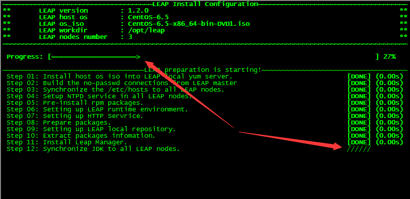

炫酷的并行进度条#
你知道怎样写一个并行的进度条吗，如果是在WEB页上或是GUI编程中这很简单，如果是用Shell写呢？或者Python？也许哪天你需要写一个这样的程序，也许这时的你正一筹莫展，那么恭喜你看到本文。 我们先来看一个例子：  这是一个普通的软件安装程序，图中的两个箭头指向两个不同的进度条，其中上方是总进度条，右下角那个是一个不停转圈圈的进度条，表示该步骤正在进行中。没错，这是用Python脚本实现的，用Shell也是一样，而且可能比Python还要简单。
Python实现#
- 在Python中，线程是假线程，它与C或者Java中的线程不同，为了完美，博主在实现的时候用了多进程，也就是multiprocessing模块。
- 在主进程中启动两个子进试，分别负责两个进度条（当然也可以是任意多个），总进度条需要一个全局变量，以在不同的步骤中为其赋不同的值，小进度条在每步完成的时候向下移动一行。
- 关于光标控制，这是一个关键点，因为在任何情况下，屏幕上只有一个光标，且所有输出都会落在光标处，那上例中的总进度条怎么会出现在光标的上方呢？这就需要移动光标了，在Python中，它没有这个能力，只能借助第三方库来实现，这样就为程序的跨平台带来麻烦，而Shell本身提供了这个功能，而且简单到不行，假设我要在屏幕的第三十行第五十列打印一个“hello”，只需这样：
echo -e "\033[30;50Hhello"或者：
printf "\033[%d;%dH%s" 30 50 hello- 接下来就是对光标进一步控制，因为在上一步中将光标移到了总进度条的位置，当打印完指定的字符后还需要移动到小进度条的位置，博主在网上搜索良久后终于找到了完美的方法，也是简单到不行：tput sc 与 tput rc 两条命令，前者用于暂时保存光标位置，然后不管将光标称动到哪，后者都能将位置还原，现在我们将上步骤中的打印命令改良一下：
tput sc ;printf "\033[%d;%dH%s\n" 30 50 hello ;tput rc- 最后就是同步问题，因为两个进度条是并行执行的，这意味着两个进程可能会在同一时刻执行打印命令，导致打印在屏幕上的字符可能错乱，所以我们要保证在同一时刻只有一个进程在调用print命令，这就用到了多进程锁，而multiprocessing模块已经提供了这样的锁
综上所述，这里给出一个简单的示例：
#!/usr/bin/python
# -*- coding: utf-8 -*-
import os,time
from multiprocessing import Process, Manager, Lock
# 打印info在终端的指定位置
def writer(info, y = 0, x = 0):
with lock:
print_cmd = "tput sc >&2 && echo -e '\033[%s;%sH%s' >&2 && tput rc >&2" % (y, x, info)
os.system(print_cmd)
# 根据pbar_data内的数据打印进度条，bar_length为进度条总长度
def progress_bar(pbar_data, y = 0, x = 0, bar_length = 80):
percent = float(bar_length) / 100
while pbar_data[0] < bar_length:
time.sleep(0.05)
current = int(float(pbar_data[1]) * percent)
if pbar_data[0] != current:
for i in range(pbar_data[0], current + 1):
time.sleep(pbar_data[2])
info = "\033[1;32;40m Progress: [" + ("=" * (i - 1) + ">").ljust(bar_length," ") + "] " + str(int(i / percent)) + "% \033[0m"
writer(info, y)
pbar_data[0] = current
'''
创建全局变量，用于将主进程信息传递给子进程
data_a[0]: 已完成进度的百分比
data_a[1]: 目前最新进度的百分比
data_a[2]: 进度条变化速度
'''
# pbar_a的数据
data_a = Manager().list()
data_a.append(0)
data_a.append(2)
data_a.append(0.5)
# pbar_b的数据
data_b = Manager().list()
data_b.append(0)
data_b.append(2)
data_b.append(0.5)
# 创建进程锁
lock = Lock()
# 创建总进度条进程
pbar_a = Process(target = progress_bar, args=(data_a, 10, 0))
pbar_a.daemon = True
# 创建其它进度条进程
pbar_b = Process(target = progress_bar, args=(data_b, 12, 0))
pbar_b.daemon = True
# 隐藏光标
os.system("printf '\33[2J\33[?25l\r'")
# 开始其它步骤并打印进度条
pbar_a.start()
pbar_b.start()
# Step 1
data_a[1] = 10
data_b[1] = 30
time.sleep(5)
# Step 2
data_a[1] = 70
data_a[2] = 0.1
time.sleep(5)
# Step 3
data_a[1] = 100
data_b[1] = 100
data_b[2] = 0.05
# 等待进度条执行完毕
pbar_a.join()
pbar_b.join()
# 显示光标
os.system("printf '\33[?25h\n'")-End-